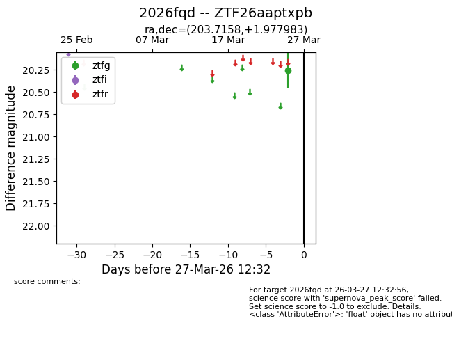
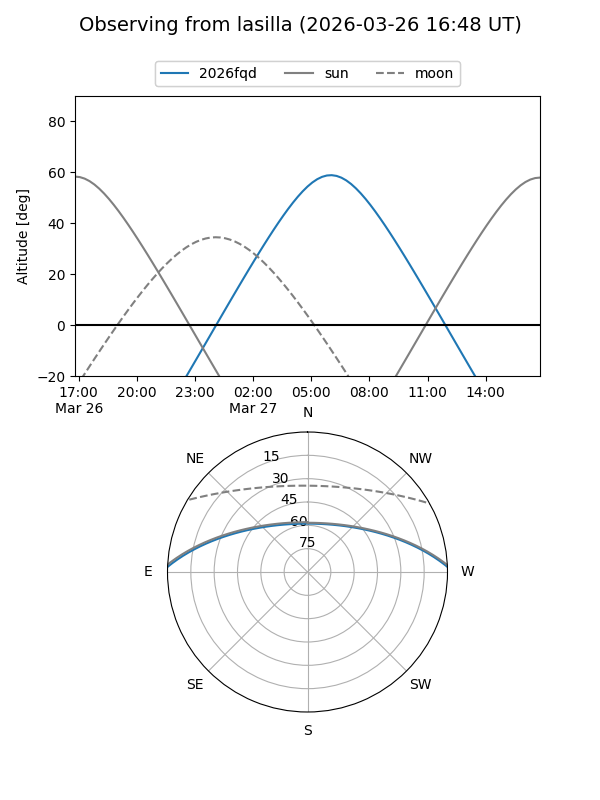
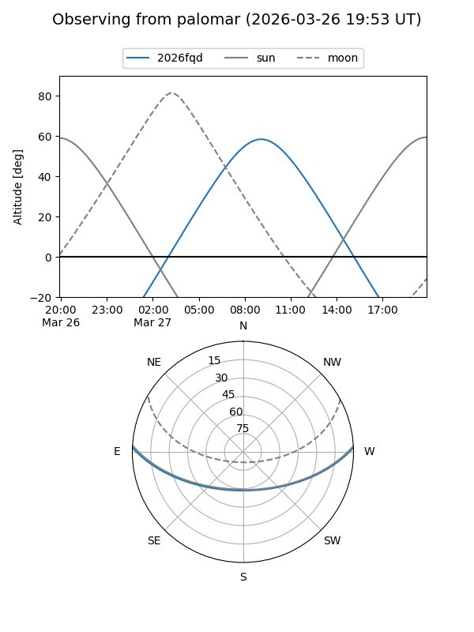

2026fqd
Target 2026fqd at 2026-03-27 12:37
Aliases and brokers:
FINK: link
Lasair: link
ALeRCE: link
TNS: link
YSE: link
alt names
ZTF26aaptxpb (ztf,fink_ztf)
2026fqd (tns,yse)
Coordinates:
equatorial (ra, dec) = 203.7158,+1.97798
equatorial (HMS+DMS) = 13:34:51.80,+01:58:40.74
galactic (l, b) = (327.2349,+62.78256)
Flags:
Photometry:
last ztfg=20.25
1 ztfg detections
Lightcurve

Visibility


Additional plots